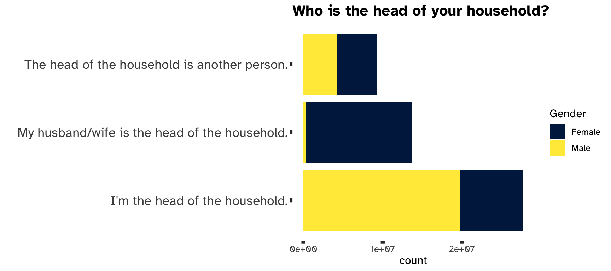
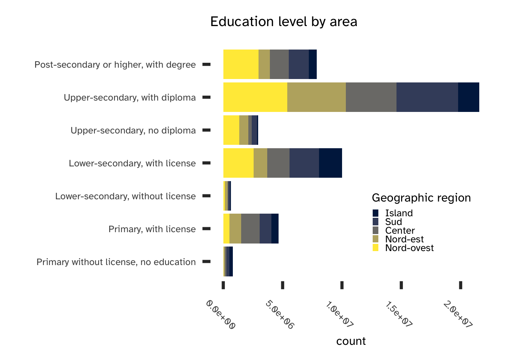
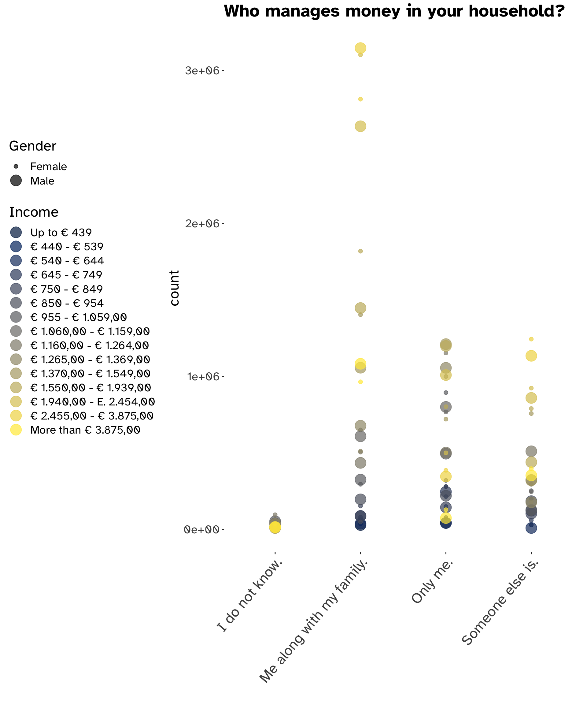
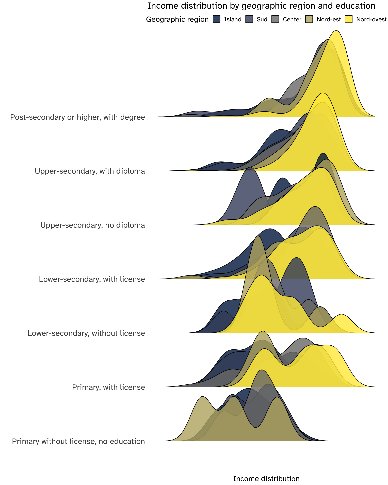

Economics of Risk and Agents Behaviour
Introduction
The following analysis will try to tackle a well-known topic, discussed and studied not only by economists but also by other social scientists, such as psychologists and sociologists.
Does gender influence risk aversion?
At a first glance, a superficial approach might consider the stereotypes that still shape and often curse our society and answer positively; for example, by stating that each gender has some innate characteristics that influence and even determine its behaviour and therefore differentiate, among other things, the attitudes against risk and financial opportunities. While this might eventually be the case, we should back this statement with a deeper insight, as only data can provide.
It is therefore my intention to investigate further this topic, hopefully shedding some light on its complex and multi-faceted nature, by analysing Bank of Italy data about adult financial literacy, even if I am positive that I will only scratch its surface.
To begin, the main question needs to be further specified in a subset of different questions:
- Is gender actually influencing risk aversion or is it (just another) stereotype?
- Are gender differences statistically significant, when considering risky investments?
Then, whether these questions are answered positively or not, we should ask:
- Are there other influences at play? What if there are other determinants?
A brief review of a subset of the relevant literature will help to clarify why I believe this aspect needs to be understood as a complex phenomenon and that simply relating gender to a specific attitude toward risk is a superficial explanation of a situation which is shaped by many different, powerful social forces. Thus, the initial hypothesis is that gender is a relevant predictor of risk aversion; however, I will test this by building an econometric model which will include a set of possible influencing factors which might lead to this result.
The alternative to the main hypothesis leads to the consideration that there might be many socio-political and cultural forces at play and that there is a non null probability that the perception of women as more risk adverse influences their decisions, which could ultimately result in experimental evidence about a statistically significant confirmation of said hypothesis without actually clarifying whether it corresponds to the proverbial egg or the chicken. Certainly, being framed as belonging to a systematically more risk averse group influences a person’s choices, not only about investments but also about entrepreneurship and other aspects of life, with important consequences on income, wealth, and ultimately on well-being. For example, the individual attitude toward risk is a fundamental push when trying to understand economic behaviour, choices under uncertainty, and ultimately the determinants of wealth: “a consequence of this stereotype is statistical discrimination which diminishes the success of women in financial and labour markets.” (Jianakoplos and Bernasek 1998, 630).
Different perception of risk are capable of defining the attitude of an individual toward financial markets profoundly and therefore his or hers access to the opportunities to properly invest his savings and participate in such markets, ultimately determining its financial behaviour, which might influence profoundly consumption in the later years of one’s life, after retirement. Indeed, “[…] to the extent that women exhibit greater risk aversion, this can help to explain women’s lower levels of wealth. Given women’s greater longevity and the increasing tendency towards self-directed pensions, greater risk aversion exhibited by women can have a significant impact on resources available to them in retirement.” (Jianakoplos and Bernasek 1998, 630).
The dataset used for the following analysis will allow to investigate the relationship between gender and risk aversion by exploring the financial literacy of Italian households and in particular their attitude toward risky investments.
Preliminary analytics
The dataset
The Bank of Italy has conducted two surveys on the financial literacy and competence of Italian adults (IACOFI), one in 2017 and the other in 2020, based on the methodology developed by the OECD’s International Network on Financial Education (INFE). Raw data are available and the 2020 survey will be used to answer the main research question: in spite of the fact that they do not have a direct estimate of risk aversion, they still contain useful proxies for the attitude toward risky assets along with data on actual investment choices, such as stocks vis-à-vis bonds. Furthermore, several other variables will allow to observe the distributions of specific characteristics and condition the relevant phenomenon to control variables such as income, age and being in charge of the financial decisions in a given household1.
1 The choice to invest in stocks does not matter if it has been made by someone else in the family.
Exploring the dataset
Before testing the main hypothesis, exploring the data will help us understand the complexity of the topic and choose the set of relevant control variables. Each of the following section will start with one or more questions, followed by a brief explanation of the meaning of a variable taken from the dataset with plots2 and statistical summaries.
2 Weights have been used for every statistical graphic. Regressions do not include weights.
capofam, income, qf1
How many women are the major recipient of income in a single household?

It is a well-known and documented fact that gender affects income, which is a major determinant of investment choices, as it creates both the possibility and the need to invest. A direct consequence of this fact is that more often than not the total household income is not earned in equal proportions and the person with the lion’s share is usually, as shown in Figure 1, the husband.
This leads to another fundamental question: is the person with higher income in charge of managing the total amount of wealth deriving from such income? More specifically:
Who manages money in the household?
Even though either members of a family might have an income, the role of deciding its allocation, whether in savings, insurance, funds or stocks, is usually a concerned effort. Such decisions are highly influenced by the actual income flow, which directly affects the amount of efforts and care needed to manage money; however, are they also affected by gender?
As shown in Figure 3, if the role of money-manager has to be played by a single member of the household, that member is usually the husband. The answers “only me” and “someone else is are complementary and as we can observe from the graph the proportion of males/females is inverted in each, with the former resulting mainly male dominated.
Being income (and thus the capacity to accumulate wealth) the main driver of investments, we should also explore some of its main determinants: education and geography.
area5, edu
Education needs to be considered as a factor with multiple influences: for each year spent pursuing a degree, there is a positive effect on income. Plotting education levels by area it is immediately evident that there are huge differences both regarding levels and geographic density (Figure 2).



Italian geography and the inequalities among its main regions are therefore a heavy influence on both education level and income (which in itself influenced by education): this complex covariance and interrelation of factors is represented in Figure 4, which visualises the distribution of income by education levels and geographic area.
It is immediately evident that there is a feedback of information: less years spent studying result in lower incomes, but also being in the northern regions or in the central area of Italy systematically affect such distributions, with higher means (higher incomes), less left-skewness (the distribution is denser around the mean and the left tail trails off more quickly) and lower variability; the only notable exception is having a lower-secondary education but no degree, for which the southern regions outshine all the others.
Conditioning the income by the area and educations reveals the profound inequalities which define the Italian economy: they should definitely be considered for their effect on risk aversion. On the one hand, while portfolio theory states that every individual should hold a non-null share of risky assets whenever there is a risk premium, the asset allocation puzzle confirm that this is not true empirically and that mostly the upper-percentile of wealthy individuals hold stocks and other form of risk in their portfolio. On the other hand, educations heavily influences the possibility to understand the basic numeracy and financial literature notions that would allow to confidently understand risk and returns.
FK, age
Financial literacy and numeracy might play a decisive role in shaping individual behaviour: financial knowledge is particularly interesting, which is defined as:
Financial knowledge is an important component of financial literacy for individuals to help them compare financial products and services and make appropriate, well-informed financial decisions. A basic knowledge of financial concepts and the ability to apply numeracy skills in a financial context, ensures that consumers can navigate with greater confidence financial matters and react to news and events that may have implications for their financial well-being. (Economic Co-operation and Development 2020)
Economic Co-operation, Organisation for, and Development. 2020. “OECD/INFE 2020 International Survey of Adult Financial Literacy.”
It is a sine-qua-non condition to develop awareness in risk preferences: first and foremost, it represents the understanding of the fundamental concepts of financial markets and basic economics.
Are gender and financial knowledge scores related?
Fitting a linear regression, using age and education as controlling variables, allows to investigate how and if financial knowledge is conditioned by these variables. Formally, given a specific individual i, the following features can be defined:
- \mathrm{FK}_i: its financial knowledge score.
- age_i: its age.
- edu_i: education level (as a multi-level categorical variable).
- gender_i: dummy variable, which can take value either 0 for females (base-line level) or 1 for males.
The model can then be expressed as: \tag{1} \mathrm{FK}_i = \alpha + \beta \times \mathrm{gender}_i + \gamma\times\mathrm{edu}_i + \delta \times \mathrm{age}_i +\epsilon_i
The most relevant aspect of this model is the statistical significance of each coefficient:
| Estimate | Std. Error | t value | Pr(>|t|) | |
|---|---|---|---|---|
| (Intercept) | 1.1315565 | 0.3882760 | 2.914310 | 0.0036055 |
| genderMale | 0.2651639 | 0.0918240 | 2.887739 | 0.0039231 |
| eduPrimary, with license | 1.5720545 | 0.3427786 | 4.586210 | 0.0000048 |
| eduLower-secondary, without license | 1.3874398 | 0.4959463 | 2.797560 | 0.0051997 |
| eduLower-secondary, with license | 2.1436012 | 0.3257675 | 6.580156 | 0.0000000 |
| eduUpper-secondary, no diploma | 2.4006961 | 0.3737612 | 6.423076 | 0.0000000 |
| eduUpper-secondary, with diploma | 2.6024108 | 0.3246352 | 8.016416 | 0.0000000 |
| eduPost-secondary or higher, with degree | 2.9327861 | 0.3437305 | 8.532224 | 0.0000000 |
| age | 0.0033914 | 0.0030964 | 1.095293 | 0.2735238 |
Most of the coefficients show a strong statistical significance3 and they all have a positive sign: financial knowledge, as expected, is increasing in education, with increasing effects for each level. genderMale is also significant and positive: this means that male respondents (being female the base-line case) have on average a better score than females. All this evidence points directly to the inclusion of these variables as controls in the final investigation on gender and risk aversion. If we compute the correlations we see that a strong relation is nowhere to be found; hence, the data matrix of both model (1) and model (2) have a full rank.
3 The F-statistic for the significance of the whole model is 15.723613, 8, 1945, while the adjusted R^2 is 0.0568812.
| cor(gender, edu) | 0.0089731 |
| cor(gender, age) | 0.0104833 |
| cor(gender, FK) | 0.0606538 |
| cor(gender, income) | 0.0228624 |
| cor(gender, area) | -0.0115591 |
| cor(edu, age) | 0.0104833 |
| cor(edu, FK) | 0.0606538 |
| cor(edu, income) | 0.0228624 |
| cor(edu, area) | -0.0115591 |
| cor(FK, age) | 0.0104833 |
| cor(FK, income) | 0.0228624 |
| cor(FK, area) | -0.0115591 |
| cor(income, area) | -0.0115591 |
While age is not statistically significant, it should be nevertheless included with in the final model, because the shifts in wealth consumption and risk attitude in the retirement years are expected to show a significant impact on risk-taking, as individuals move from risky assets to more liquid form of savings.
Methodology
Measuring risk aversion
Risk aversion has been studied in different perspectives: economists, starting from the concept of utility, derived it from the notion of the risk premium (\Psi). Given \sigma^2 the variability associated to a certain risky asset, risk aversion A(W) is then: \Psi = - \frac{1}{2} \frac{U''(W)}{U'(W)}\sigma^2= A(W) \frac {\sigma^2}{2}
Risk aversion comes from individual preferences and is a parameter which defines the so-called Arrow-Pratt absolute risk aversion. Although it is possible to empirically measure an individual’s degree of relative risk aversion by computing how the percentage of their wealth invested in risky assets changes when their wealth increases (Bernasek and Shwiff 2001, 349), detailed data about gender and the household financial decision-making process are needed.
Moreover: “one of the major limitations of previous studies of gender and risk aversion is their inability to deal with the problem of who makes investment decisions in married and co-habiting couple households. If a female respondent who is married holds a risky portfolio of wealth, we do not know if this reflects her attitudes toward risk or her partner’s, or some combination.” (Bernasek and Shwiff 2001, 346).
The IACOFI dataset contains observations about who is in charge of investment decisions, but not detailed data about financial portfolios: in spite of this, data about financial choices can be used to build a proxy variable representing the attitude toward risk and investor’s preferences.
Choosing a proxy
The responses to these questions can be used as a proxy for risk aversion:
- “I am ready to risk a portion of my money when I am saving or investing”.
- The answer could be either agree or disagree.
- “Consider the following financial products and services. Have you personally underwritten one of them in the last two years?”.
- Among all products, there is the option “Stocks or capital shares, listed or unlisted”.
- “Consider the following financial products and services. Have you personally underwritten one of them in the last two years?”.
- Among all products, there is the option “Stocks or capital shares, listed or unlisted”.
To capture the meaning of risk aversion through the answer to these listed question, a new variable has been constructed, called risk_proxy or \rho_i, where i is a single respondent. Given the following cases:
Case 1: I am NOT confident taking risks and I have NOT invested/I am NOT investing in the stock market.
Case 2: I am confident taking risks or I have invested/ I am investing in the stock market.
We can encode them as a categorical variable that can take the following values:
\rho_i = \begin{cases} 0 \quad \mathrm{\to Case \ 1}\\ 1 \quad \mathrm{\to Case \ 2} \end{cases}
It is a variable built to assess both the confidence in risk taking and the actual investment in risky assets: even though this is only a proxy for A(W), if the main hypothesis holds true there should be nevertheless a negative relation between gender and investing in stocks and risk taking which approximate the effect of variable of interest.
Results
Model specification
This section will provide a test of the main research question:
Does gender influence risk aversion?
Which is translated in a null hypothesis: there is a negative relation between the two variables.
In other words, the expectations are for the average level of risk aversion to be systematically lower for women: if this is true, statistically significant differences in the conditional distribution of the proxy variable for risk aversion to the gender variable should be observable and quantifiable as regression coefficients. To perform the test, a logistic regression has been chosen as the main econometric approach, as it gives explicit p-values for all predictor variables and also coefficients estimate of their effect on the response in the form of log-odds ratios.
The model specification is the following: \tag{2} \rho_i = \alpha + \beta \times \mathrm{gender}_i + \mathbf{X}_i \times{\Theta} + \epsilon_i
\mathbf{X}_i is a vector of controlling variables, each with its own coefficient:
capofam, expressing whether the respondent is or not the major income percipient in the household.income, for various income levels.qf1, expressing whether the respondent is or not in charge of monetary decisions in the household.area5, levels for the 5 Italian regions.edu, possible levels of schooling and education.FK, numerical variable for the financial knowledge scores.age, numerical variable for the age of the respondent.
If not expressly stated, the listed control variables are categorical variables.
Learning the model
Fitting a logistic regression on the model yields the following coefficients, which are followed by their z-statistics and p-values:
| Estimate | Std. Error | z value | Pr(>|z|) | |
|---|---|---|---|---|
| (Intercept) | -16.3971959 | 1219.2849335 | -0.0134482 | 0.9892702 |
| capofamMy husband/wife is the head of the household. | 0.2668837 | 0.4224676 | 0.6317259 | 0.5275660 |
| capofamThe head of the household is another person. | -0.4620976 | 0.5287527 | -0.8739390 | 0.3821515 |
| income€ 440 - € 539 | -0.0732734 | 1991.4071244 | -0.0000368 | 0.9999706 |
| income€ 540 - € 644 | 14.6453408 | 1219.2844976 | 0.0120114 | 0.9904165 |
| income€ 645 - € 749 | 14.7130113 | 1219.2842896 | 0.0120669 | 0.9903722 |
| income€ 750 - € 849 | 14.0968748 | 1219.2844901 | 0.0115616 | 0.9907754 |
| income€ 850 - € 954 | 0.3915947 | 1365.6945186 | 0.0002867 | 0.9997712 |
| income€ 955 - € 1.059,00 | 14.6610884 | 1219.2841684 | 0.0120243 | 0.9904062 |
| income€ 1.060,00 - € 1.159,00 | 14.0628944 | 1219.2841568 | 0.0115337 | 0.9907976 |
| income€ 1.160,00 - € 1.264,00 | 14.2985369 | 1219.2841323 | 0.0117270 | 0.9906434 |
| income€ 1.265,00 - € 1.369,00 | 14.1500052 | 1219.2841298 | 0.0116052 | 0.9907406 |
| income€ 1.370,00 - € 1.549,00 | 14.9015497 | 1219.2840780 | 0.0122216 | 0.9902489 |
| income€ 1.550,00 - € 1.939,00 | 13.7728248 | 1219.2841073 | 0.0112958 | 0.9909874 |
| income€ 1.940,00 - E. 2.454,00 | 13.8305379 | 1219.2840903 | 0.0113432 | 0.9909497 |
| income€ 2.455,00 - € 3.875,00 | 13.7890486 | 1219.2840962 | 0.0113091 | 0.9909768 |
| incomeMore than € 3.875,00 | 15.1118438 | 1219.2840959 | 0.0123940 | 0.9901112 |
| qf1Me along with my family. | 0.1979151 | 1.0850325 | 0.1824048 | 0.8552651 |
| qf1Only me. | 0.1265318 | 1.0851717 | 0.1166007 | 0.9071765 |
| qf1Someone else is. | -0.5863301 | 1.1588702 | -0.5059498 | 0.6128919 |
| area5Sud | -0.0105058 | 0.4346910 | -0.0241685 | 0.9807182 |
| area5Center | 0.3405593 | 0.3984331 | 0.8547464 | 0.3926916 |
| area5Nord-est | 0.6361462 | 0.4721407 | 1.3473659 | 0.1778624 |
| area5Nord-ovest | 0.8635625 | 0.3850979 | 2.2424494 | 0.0249323 |
| eduPrimary, with license | -0.9659282 | 0.9172279 | -1.0530951 | 0.2922974 |
| eduLower-secondary, without license | -0.7303251 | 1.2977173 | -0.5627768 | 0.5735869 |
| eduLower-secondary, with license | -1.1777204 | 0.8613891 | -1.3672340 | 0.1715520 |
| eduUpper-secondary, no diploma | -1.8485571 | 1.1115857 | -1.6629911 | 0.0963142 |
| eduUpper-secondary, with diploma | -1.0472196 | 0.8666150 | -1.2084023 | 0.2268925 |
| eduPost-secondary or higher, with degree | -0.2300061 | 0.8984364 | -0.2560071 | 0.7979454 |
| FK | 0.0736098 | 0.0613258 | 1.2003076 | 0.2300199 |
| age | -0.0200775 | 0.0096215 | -2.0867420 | 0.0369115 |
| genderMale | 0.3787489 | 0.3506839 | 1.0800292 | 0.2801292 |
The null and residual deviance of the model are respectively 696.776 and 621.854, while the AIC score is 687.854.
It is evident that all variables do not show any statistical significance, with very high p-values, except age and the edu level “upper-secondary, no diploma” (which is borderline significant for a confidence level of 10%).
Age has a negative effect on risk taking, which is a well known fact and is not surprising: risk-taking needs to decrease in the latter years of everyone life, since more liquid and less volatile form of financial wealth are necessary to maintain a steady consumption level after retirement.
All these considerations and the summary of the fitted model allow to safely reject the main hypothesis: based on the analysis performed on the Bank of Italy IACOFI dataset, gender does not have a statistically significant relation with risk aversion, after a set of control variables is taken in consideration, for most confidence levels.
Conclusions
The role of gender in shaping behaviour is complex and many social forces are at play. Even though the results presented in this report are not conclusive and they are not enough to falsify with absolute confidence the stereotype of women being more risk averse than men, they do find support in the economic literature: experimental evidence based on choices among different gambles and/or valuation of gambles4 shows that while “the findings from field studies conclude that women are more risk averse than men […] the findings of laboratory experiments are, however, somewhat less conclusive. While the preponderance of laboratory evidence is consistent with field evidence, there is enough counter-evidence to warrant caution.” (Eckel and Grossman 2008, 1071).
4 In particular, abstract gamble experiments framed as stock investment problem.
If we take other factors into account, the differences in risk preferences seem to disappear or become much less relevant: a main driver of investing is financial literacy, which is shaped by education and the opportunity to access the financial markets. In a highly relevant study, knowledge of finance has been demonstrated to mitigate the gender difference in financial risk-aversion:
“We find that among highly educated individuals, women are significantly more risk averse than men. However, we find that when men and women have both attained a high level of financial education, they are equally likely to invest a significant portion of their portfolio in risky assets, suggesting that financial education mitigates the gender difference in financial risk aversion […] Most studies that find gender to be a significant determinant of risk aversion also find various proxies of the level of education to be significant. In addition, even when gender is insignificant, risk aversion has been found to be inversely related to the level of education.” (Hibbert, Lawrence, and Prakash 2013, 140)
Hibbert, Ann Marie, Edward R Lawrence, and Arun J Prakash. 2013. “Does Knowledge of Finance Mitigate the Gender Difference in Financial Risk-Aversion?” Global Finance Journal 24 (2): 140–52.
Considering again age as an influencing factor, its relevance can additionally be explained because of the cultural evolutions that occurred in most societies in the more-or-less recent past: scientific and financial education became more inclusive and the role of women in society has been redefined.
“The second school of thought […] suggests sociocultural reasons for men taking greater risks than women. Early research […] noted that children are pressured during childhood (through peer pressure and social expectations) into behaving according to their cultural gender roles, which would result in a greater propensity for men to take risks. […] Women who took risks were looked down upon as unpopular whereas the opposite occurred for men. […] more restrictive parental monitoring of girls during childhood might explain their increased ability to resist taking part in risky behaviour in later life. […] Such socio-political factors as power and status, which favour men, also lead to increased risk tolerance. Interestingly, some research suggests that social change-for example, the feminist movement of the 1960s and 1970s-has produced a change in female stereotypes and the attitudes of women toward risk. Research also indicates that this change has led to substantial increases in the number of female entrepreneurs and self-employed women.” (Watson and McNaughton 2007)
Watson, John, and Mark McNaughton. 2007. “Gender Differences in Risk Aversion and Expected Retirement Benefits.” Financial Analysts Journal 63 (4): 52–62.
To summarise, studying economic behaviour is never a linear, simple path: social sciences need always to take into account the complexity of their subject of choice. A deeper understanding of the forces at play help to understand the empirical result and, hopefully, try to address any problematic stereotype by exposing its deeper roots: education, age, income and economic opportunities, financial knowledge and, at large, socio-cultural and political factors. The lack of a conclusive and significant relation in the IACOFI data between financial choices, such as investing in stocks, confidence toward risk and gender as long as we take into account the complexities of possible predictors of risk aversion is a strong result, hopefully showing that a stereotype more often than not is just a stereotype.